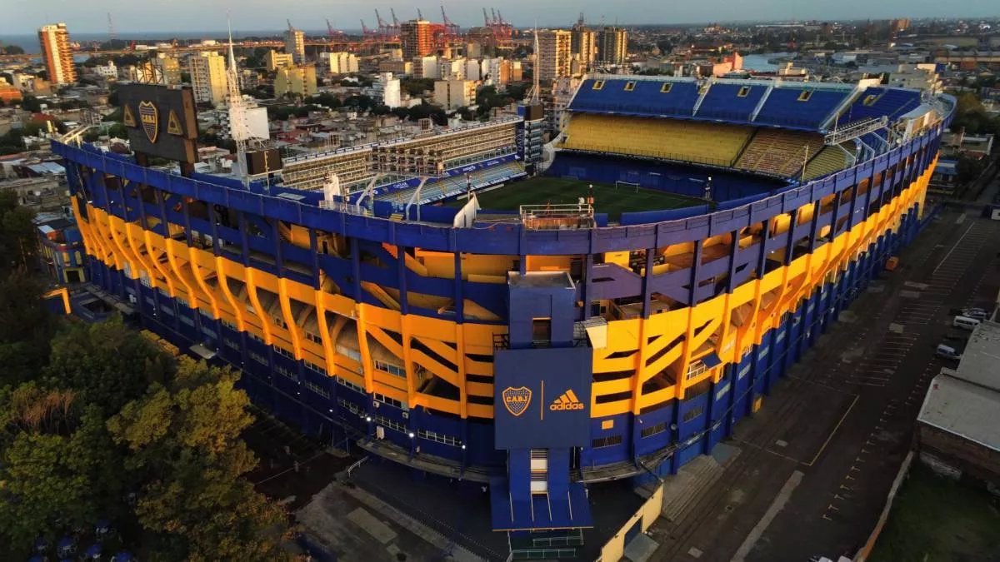

Juan Roman Riquelme:
Torneo Apertura: 1998, 2000, 2008 y 2011.
Torneo Clausura: 1999.
Copa Argentina: 2011 y 2012.
Copa Libertadores de América: 2000, 2001 y 2007.
Copa Sudamericana: 2008.
Copa Intercontinental: 2000.
ESTADIO ALBERTO J.ARMANDO
LA BOMBONERA

El 25 de mayo de 1940 se inauguró oficialmente La Bombonera. Muchos años después, Alberto J. Armando prometió inaugurar el 25 de mayo de 1975 un nuevo y fabuloso estadio en la Ciudad Deportiva de Boca Juniors, destinado a ser sede de la Copa Mundial de Fútbol de 1978. Sin embargo llegó la fecha y la obra estaba apenas empezada, paralizada y abandonada, debido a una gran crisis económica que afectó a la Argentina en general y al club en particular.
En 1996, Mauricio Macri remodeló el estadio demoliendo los antiguos palcos que daban a la calle Del Valle Iberlucea, reemplazándolos por una pequeña tribuna. Sobre la misma se construyeron los nuevos palcos, esta vez hechos de estructura metálica. Esta remodelación elevó la capacidad del estadio a 57 395 espectadores.
Por una reglamentación de la FIFA, desde 2007 todos los espectadores deben contar con un asiento, lo que redujo notablemente la capacidad del estadio. Debido a ello, se evaluaron alternativas como una posible mudanza o una ampliación.
Fue distinguido como «el mejor estadio de fútbol del mundo» por la prestigiosa revista inglesa FourFourTwo. Superando en la elección a otros estadios de renombre mundial como el Camp Nou (FC Barcelona), Wembley, Estadio Azteca, San Siro (AC Milan y FC Internazionale), Maracaná, Signal Iduna Park (Borussia Dortmund), Santiago Bernabeu (Real Madrid), Old Trafford (Manchester United) y Allianz Arena (Bayern Munich), entre otros.
El sitio web estadounidense Bleacher Report, la ubicó en el puesto 47, entre los 52 estadios deportivos del mundo, que hay que visitar antes de morir. Describiéndolo como «un estadio de forma única, del que se dice que late como un corazón, por la influencia de las gradas durante los partidos. La intimidación en su máxima expresión». Cabe mencionar que fue el único estadio argentino dentro del ranking, y uno de los dos únicos de Sudamérica (el otro fue el Maracaná de Brasil).
Según un informe del diario inglés The Times en 2009, es el mejor estadio de América y el 7.º a nivel mundial.
Es el sexto estadio con mayor capacidad del fútbol argentino.
Fue utilizado como localía de la selección de fútbol de Argentina durante las décadas de los 20, 30, 50, 60, 70, 90, y en 2012, 2017, 2018 y 2020.
Además, la selección argentina nunca ha perdido un partido oficial (disputó 16) haciendo de local en La Bombonera. Fue sede del Sudamericano de 1925 en el que Argentina se coronó campeón. Asimismo, aquí se disputaron los 2 partidos de las Eliminatorias para el Mundial de 1970, y pese a no perder ninguno, la selección no clasificó al Mundial.
En este estadio se disputaron cuatro finales de la Copa Intercontinental y once finales de la Copa Libertadores de América (récord).
Tiene la mayor media de asistencia del fútbol argentino, con 42 000 espectadores.
Allí se jugó el Superclásico de las Américas 2012, disputado entre las selecciones de Argentina y Brasil, el 21 de noviembre de dicho año, con victoria de los locales por 2 a 1, aunque los visitantes triunfaron en el desempate por penales.
COMPLEJO PEDRO POMPILLO
El Complejo Pedro Pompilio es usado por el club para entrenar a sus juveniles. En él también disputa sus partidos la sección femenina de Boca Juniors. Se llama Pedro Pompilio en honor al 31.º presidente del club (desde el 4 de diciembre de 2007 hasta su fallecimiento, el 30 de octubre de 2008).
MUSEO
El Museo de la Pasión Boquense fue inaugurado el 3 de abril de 2001. Se encuentra ubicado dentro de las instalaciones del estadio de Boca Juniors.
Es el primer museo temático de fútbol de la Argentina. Cuenta con computadoras y diversos dispositivos tecnológicos, ofreciendo además las más avanzadas técnicas de exhibición, trucos escénicos y lumínicos, espectáculos audiovisuales y diversos efectos especiales.
Puede compararse con Museos Europeos de Fútbol, tales como los del FC Barcelona, Ajax y Manchester United.
El recorrido del mismo abarca los orígenes, los campeonatos y títulos, las camisetas, el contexto barrial, los jugadores e ídolos, las vitrinas, objetos preciados, merchandising, suvenires, etc. Todo lo que Boca Juniors ha logrado en sus 115 años de historia, que lo han llevado a convertirse en el club más campeón de la Argentina, y uno de los más ganadores del mundo.
Este museo se encuentra entre los tres más visitados de la ciudad de Buenos Aires.
LA HISTORIA LA ESCRIBIMOS NOSOTROS
Nuestros 4 idolos más ganadores
Martin Palermo:
Torneo Apertura: 1998, 2000, 2005 y 2008.
Torneo Clausura: 1999 y 2006.
Copa Libertadores de América: 2000 y 2007.
Copa Sudamericana: 2004 y 2005.
Copa Intercontinental: 2000.
Recopa Sudamericana: 2005, 2006 y 2008.

Carlos Bianchi:
Torneo Apertura: 1998, 2000 y 2003.
Torneo Clausura: 1999.
Copa Libertadores de América: 2000, 2001 y 2003.
Copa Intercontinental: 2000 y 2003.

Sebastian Battaglia:
Torneo Apertura: 2000, 2003, 2005, 2008 y 2011.
Torneo Clausura: 1999 y 2006.
Copa Libertadores de América: 2000, 2001, 2003 y 2007.
Copa Intercontinental: 2000 y 2003.
Recopa Sudamericana: 2005 y 2006.